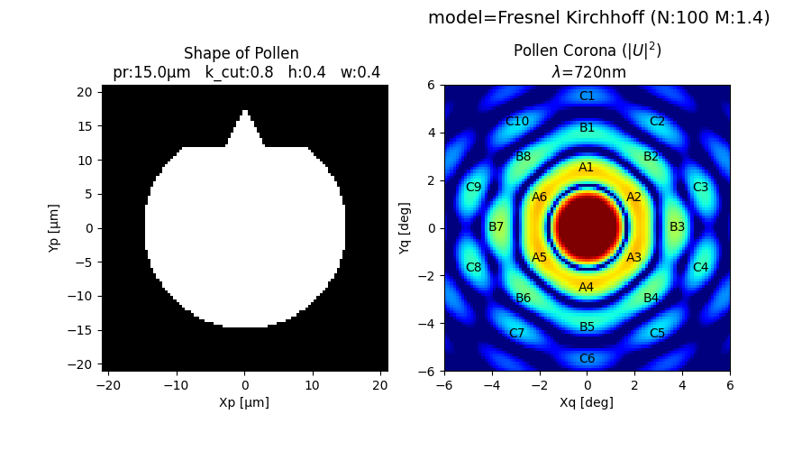

六角形の花粉光環¶
花粉形状として、つぶれた本体 + パピラ(突起)を仮定すると、六角形の花粉光環 を再現できる。
スギ花粉による多角形の花粉光環が観測されている。花粉の変形やパピラが花粉 光環の形状に与える影響をシミュレーションで確かめる。フレネル・キルヒホッ フの回折積分を直接解いている。計算量は多いが理論と実装の単純さを優先した。 計算量が O(N^4) なので、N_SEP は 100 くらいが限界。
\[ \begin{align}\begin{aligned}U(x_q,y_q,z_q) = \frac{z_q}{iλ} \iint_\Sigma u(x,y,0)\frac{1}{r^2}exp(ikr) dx dy\\r = \sqrt{(x_q - x)^2 + (y_q - y)^2 + z_q^2}\\k = \frac{2\pi}{λ}\end{aligned}\end{align} \]
# -*- encoding: utf-8 -*-
method = "Fresnel Kirchhoff"
import numpy as np
import matplotlib.pyplot as plt
DEG = np.pi/180
qz = 1 # [m] 開口面から像面までの距離 >> (π/λ)*R^2 = 1e-3[m]
q_ang = 7*DEG # [rad] 像面の範囲に対応する角度(片側)
lam = 720e-9 # [m] 波長 (紫:400, 青:490, 緑:550, 赤:720 nm)
W_MARGIN = 1.4 # 計算範囲 (半径相対, Fresnel Kirchhoff の場合、開口部と同程度
N_SEP = 100 # O(N^4) なので 100 くらいが限界
def norm(x):
a = np.abs(x)
return a / a.max()
def mapxy(f, x, y):
xx, yy = np.meshgrid(x, y)
zz = np.vectorize(f)(xx, yy)
return xx, yy, zz
def _f(x1, y1, x2, y2):
def _line(x): # (x1, y1), (x2, y2) を通る直線を表す関数
return y1 + (x - x1)*(y2 - y1)/(x2 - x1)
return _line
def gen_shape_cedar(pr, k_cut, h_papilla, w_papilla):
"""
Parameters
----------
pr, float : [m] 開口(花粉)半径 (スギ 15e-6)
w_papilla, float : [-] パピラ幅(三角の底辺, 半径相対) typ. 0.2～0.4
h_papilla, float : [-] パピラ高さ(半径相対) typ. 0.4
k_cut, float : [-] 円を切り取る高さ(半径相対) (1で切り取りなし, 0 で半円)
Returns
-------
shape_cedar, callable : 開口部の形状を表す関数
"""
def shape_cedar(px, py):
w2 = pr*w_papilla # [m] パピラの幅（三角の底辺)
y1 = pr*k_cut # [m] 円を切り取る高さ(球部の上端)
y2 = _f(0, pr*(k_cut + h_papilla), -w2/2, y1)(px) # パピラの左斜線
y3 = _f(0, pr*(k_cut + h_papilla), w2/2, y1)(px) # パピラの右斜線
area_list = [
(py < y1) and (px**2 + py**2 < pr**2), # 欠けた円
(py >=y1) and (py < y2) and (py < y3), # papilla
]
return any(area_list)
return shape_cedar
def gen_fkd_pixel(pxx, pyy, puu):
def fkd_pixel(qx, qy):
k = 2*np.pi/lam # 波数
r = np.sqrt((qx - pxx)**2 + (qy - pyy)**2 + qz**2)
return qz/(1.0j*lam)*(puu*np.exp(1.0j*k*r)/r**2).sum()
return fkd_pixel
def extent(xx, yy):
# imshow の origin = 'lower' と対
return np.array([xx[0][0], xx[0][-1], yy[0][0], yy[-1][0]])
def my_imshow(ax, zz, ext, ttl, xl, yl, **kw):
ax.imshow(zz, extent=ext, origin='lower', **kw)
ax.set_title(ttl)
ax.set_xlabel(xl)
ax.set_ylabel(yl)
def marker(ax):
rnc = [
(2.3, 6, 'A'),
(3.8, 8, 'B'),
(5.0, 10, 'C')
]
for (r, n, c) in rnc:
for j in range(n):
th = -(360*j/n - 90)*DEG
x = r*np.cos(th)
# y = r*np.sin(th)*1.1 # やや楕円 (川村にゃ子さん 2022年4月5日, 熟した花粉?)
y = r*np.sin(th)*1.2 # はっきり楕円 (綾塚さん 2022年3月15日, 未熟な花粉?)
ax.text(x, y, '%s%d' % (c, j + 1), color='k', ha='center', va='center')
def sim(pr, k_cut, h_papilla, w_papilla):
"""
pr, k_cut, h_papilla, w_papilla : gen_shape_cedar() 参照。
"""
# 開口面
shape_cedar = gen_shape_cedar(pr, k_cut, h_papilla, w_papilla)
p_ = np.linspace(-pr*W_MARGIN, pr*W_MARGIN, N_SEP)
pxx, pyy, puu = mapxy(shape_cedar, p_, p_)
# 像面
fkd_pixel = gen_fkd_pixel(pxx, pyy, puu)
q_ = np.linspace(-q_ang*qz, q_ang*qz, N_SEP)
qxx, qyy, quu = mapxy(fkd_pixel, q_, q_)
# 作図
fig, axes = plt.subplots(1, 2, figsize=(9, 5))
ax = axes[0]
sp = 'pr:%.1fμm k_cut:%.1f h:%.1f w:%.1f' % (pr/1e-6, k_cut, h_papilla, w_papilla)
my_imshow(ax, puu, extent(pxx, pyy)/1e-6,
'Shape of Pollen \n %s' % (sp), 'Xp [μm]', 'Yp [μm]', cmap='gray')
ax = axes[1]
my_imshow(ax, np.log10(norm(np.abs(quu)**2)), extent(qxx, qyy)/qz/DEG,
'Pollen Corona ($|U|^2$)\n $\lambda$=%.0fnm' % (lam/1e-9), 'Xq [deg]', 'Yq [deg]', cmap='jet', vmin=-3.5, vmax=-1)
marker(ax)
fig.text(0.95, 0.95, 'model=%s (N:%d M:%.1f)' % (method, N_SEP, W_MARGIN), fontsize=14, ha='right')
#sim(pr=15e-6, k_cut=0.5, h_papilla=0.4, w_papilla=0.4)
# sim(pr=15e-6, k_cut=0.8, h_papilla=0.4, w_papilla=0.4)
sim(pr=15e-6, k_cut=0.6, h_papilla=0.4, w_papilla=0.4)
plt.show()